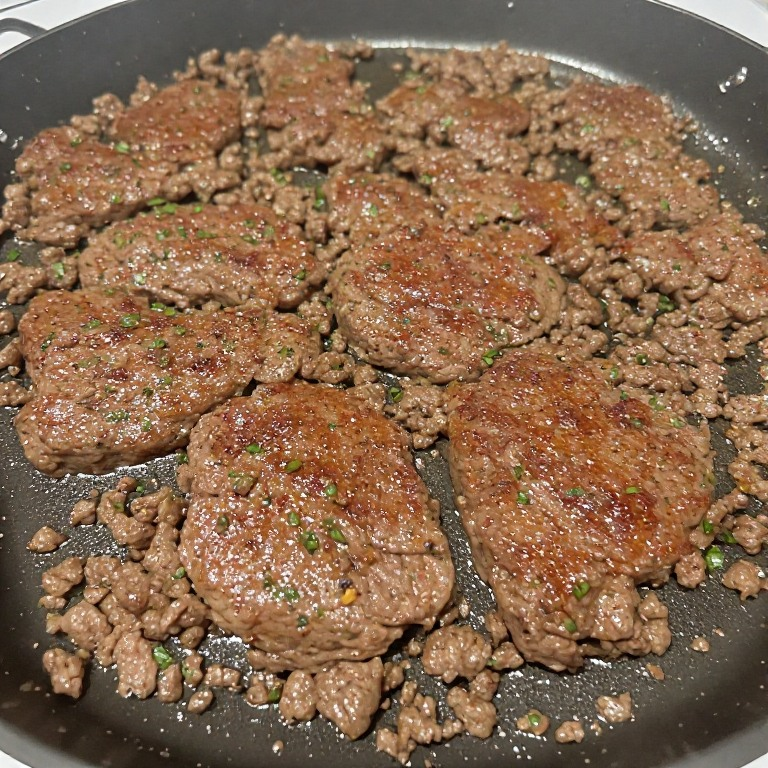

Pan Fried Beef Steak

Description
This is a delicious and easy-to-make pan-fried beef steak dish.
Ingredients
- 2 beef steaks
- 1 teaspoon of salt
- 1 teaspoon of black pepper
- green onions
- butter
Steps
- Let your steak sit at room temperature for about 20-30 minutes.
Pat it completely dry with paper towels (this is the secret to a great crust).
Just before cooking, generously season both sides with kosher salt and freshly cracked black pepper.
- Place a heavy-bottomed skillet (preferably cast-iron) over high heat until it is smoking hot.
Add a high-smoke-point oil (like avocado or canola).
Place the steak in the pan and sear for 3 to 4 minutes without moving it to build a rich brown crust.
Flip and sear the other side for another 3 to 4 minutes.
- Turn the heat down to medium-low. Toss a few tablespoons of unsalted butter,
a few crushed garlic cloves, and a fresh herb sprig (like rosemary or thyme) into the pan.
As the butter melts and foams, tilt the pan slightly and use a spoon to continuously drizzle (or baste) the hot,
flavorful butter over the top of the steak until your desired temperature is reached.
- Remove the steak from the pan and place it on a cutting board or warm plate.
Pour the remaining garlic butter from the pan over the top and let it rest for 5 to 10 minutes.
Resting allows the juices to redistribute, ensuring the meat stays tender.
Slice against the grain and serve.
Home